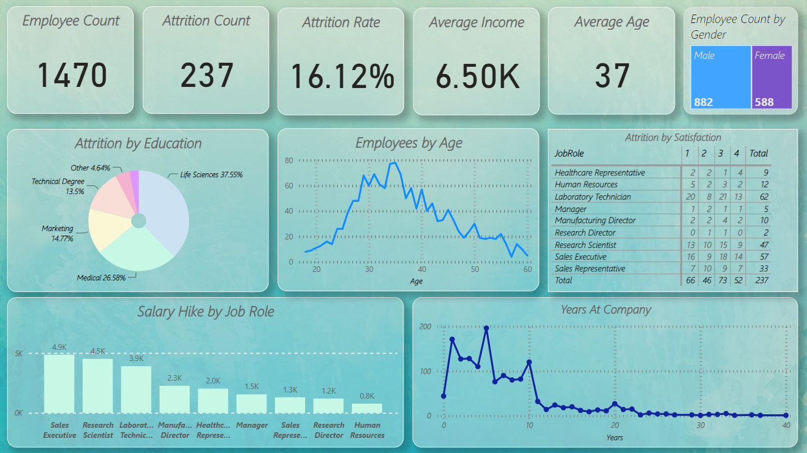

Developed a comprehensive Power BI dashboard for HR, analyzing employee attrition data. Key metrics include attrition rate, demographics, satisfaction, and salary trends, enabling data-driven HR decisions and strategy development.
Project Overview :
This project revolves around the development of an HR Analytics Dashboard designed to provide critical insights into employee attrition and related workforce metrics within an organization.
The goal is to enable data-driven decision-making and gain a deeper understanding of employee retention, satisfaction, and various demographic factors.
Project Details :
Employee Count: This is simply the total number of employees we have in our dataset. It gives us a quick look at the size of our workforce.
Attrition Count: This tells us how many employees have left our company. When we see "Yes" in the Attrition column, it means an employee has left.
Attrition Rate: This is like a percentage that shows us how fast employees are leaving. It's calculated by dividing the Attrition Count by the total Employee Count.
Average Income: This is the typical or average monthly income of our employees. It helps us understand the salary range within our company.
Average Age: This is the average age of our employees. It gives us a sense of the age group we mostly have in our workforce.
Employee Count by Gender: Here, we're counting how many male and female employees we have. It's useful for understanding gender diversity in our company.
Attrition by Education: This metric helps us see if employees with different education levels are leaving at different rates. Are those with more education leaving less?
Employee by Age: We're categorizing our employees into different age groups to see how many fall into each group. It helps us understand our workforce's age distribution.
Attrition by Satisfaction: This tells us if employees who are less satisfied are leaving more often. It's important because we want to keep our employees happy.
Years at Company: This shows us how long our employees have been with us. It helps us understand our workforce's experience level.
Salary Hike by Job Role: We're looking at how much each job role's salary typically increases. Some roles might get bigger raises than others.
Project Preview :
